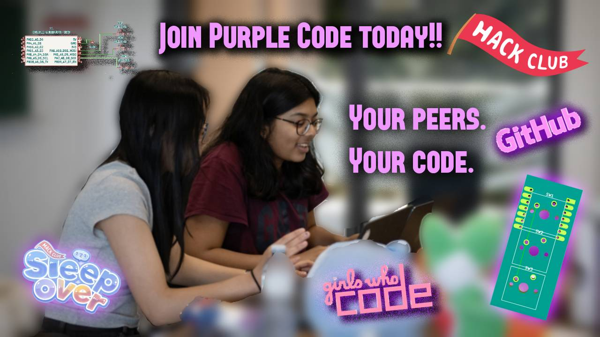

Purple Code Mission Statement
Our school's computer science and other STEM clubs are dominated by cis male students. With this, we want to create a safe and inclusive space for female, genderqueer, and trans students to learn and grow in the fields of STEM, primarily computer science. We want to encourage and empower these students by showing them that you don't have to be alone in a field you're interested in; there will always be some niche that you can fit into and thrive!
Our Labs
We will hold a variety of labs of various STEM themes to build initiative and push past the beginner stages of science, technology, engineering, and mathematics. We will build our skills for the real world and even find talents we never knew we had. Programming in particular has its clutches on our world, especially in medicine, computers, architecture, mechanics, and computational math. So, we will host labs in accordance to each of these themes. There will likely be one leader per theme to guide their peers through a lab in its skill building and expertise. For science, since medicine is very popular, we will host labs in bioengineering through creating computer simulations. We will even build up portfolios for real-world application building and job experience. For technology, we will teach data analytics programming and PhotoPea labs, which is a free online Photoshop. For technology, we will typically use HackClub and Girls Who Code resources to improve upon our foundations. For engineering, we will likely use electronical engineering and mechanical principles to better understand how the world around us works and how to "hack" or manipulate to help people. For mathematics, we will use Python to make calculators and computational math programs. We will even build our own online graphing calculator to help us in math! There is a branch for each and every person, but if you are uninterested in one, feel free to explore the others instead! Overall, this club is about finding you. So, feel free to stop by at any time and get down to the PurpleCode!
UPCOMING EVENTS!! (Mark your calendars, girls gays and theys!)

Interest Meeting
Come to our interest meeting to learn more about our club and what we do! We're gonna be hosting a lot of different labs in the future, so if you want to get a head start on learning about the different themes, you are 100% invited! We will also be discussing our format and how we want to create a safe and inclusive environment for all STEM students!